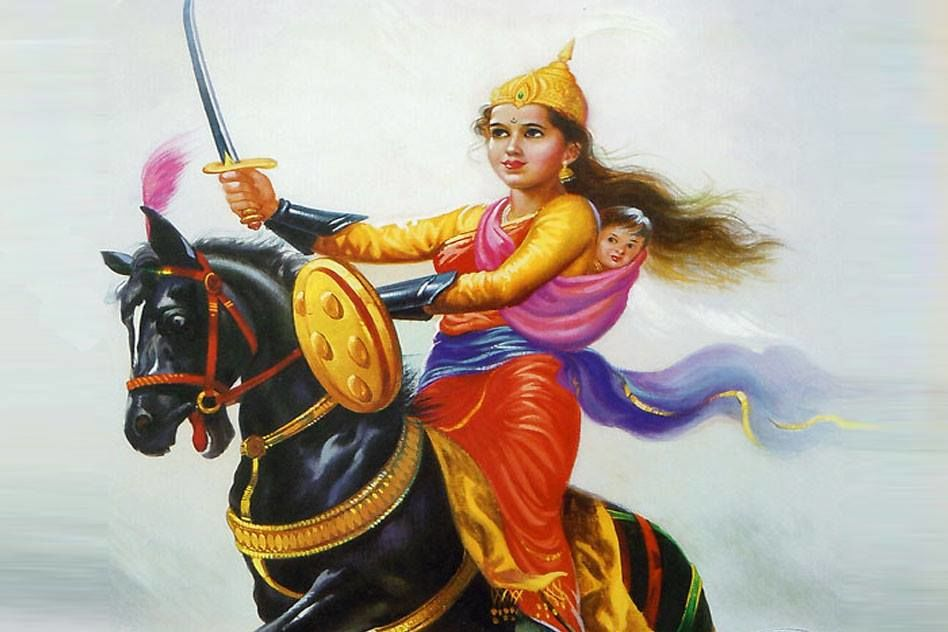

Rani Lakshmi Bai
1828 - 1858

Rani Lakshmi Bai
(aka Jhansi ki Rani / Rani of Jhansi)
Early Life
Rani Lakshmibai was born on 19 November 1828 in the town of Varanasi
into a Marathi Karhade Brahmin family. She was named Manikarnika and was called Manu.
She was taught to read and write and was skilled in Shooting, Horsemanship and
Fencing.
Nana Sahib and Tantia Tope were her childhood friends.
Marriage
After Maharaja's death, the britishers rejected Damodar's claim to the throne since he was adopted and
annexed the state to its territories.
The Revolt of 1857
Rani then fought for the independence along with Tatya Tope, Nana Sahib and Rao Sahib.
Death
Her tomb is in the Phool Bagh in Gwalior where she took her last breath.
I adore Rani Lakshmibai for her bravery, her devotion for the people and the nation.
She gives me inspiration to fight against all the odds without doubting my potential.
made by Jyoti Dwivedi